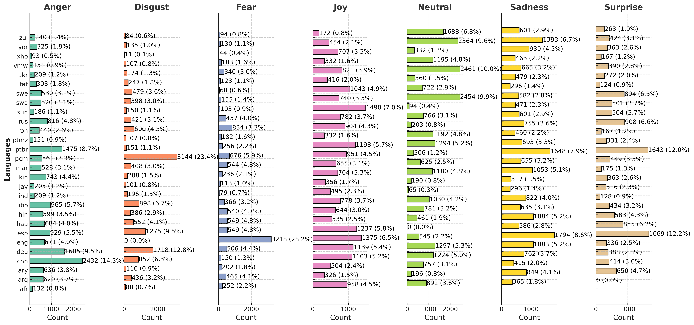
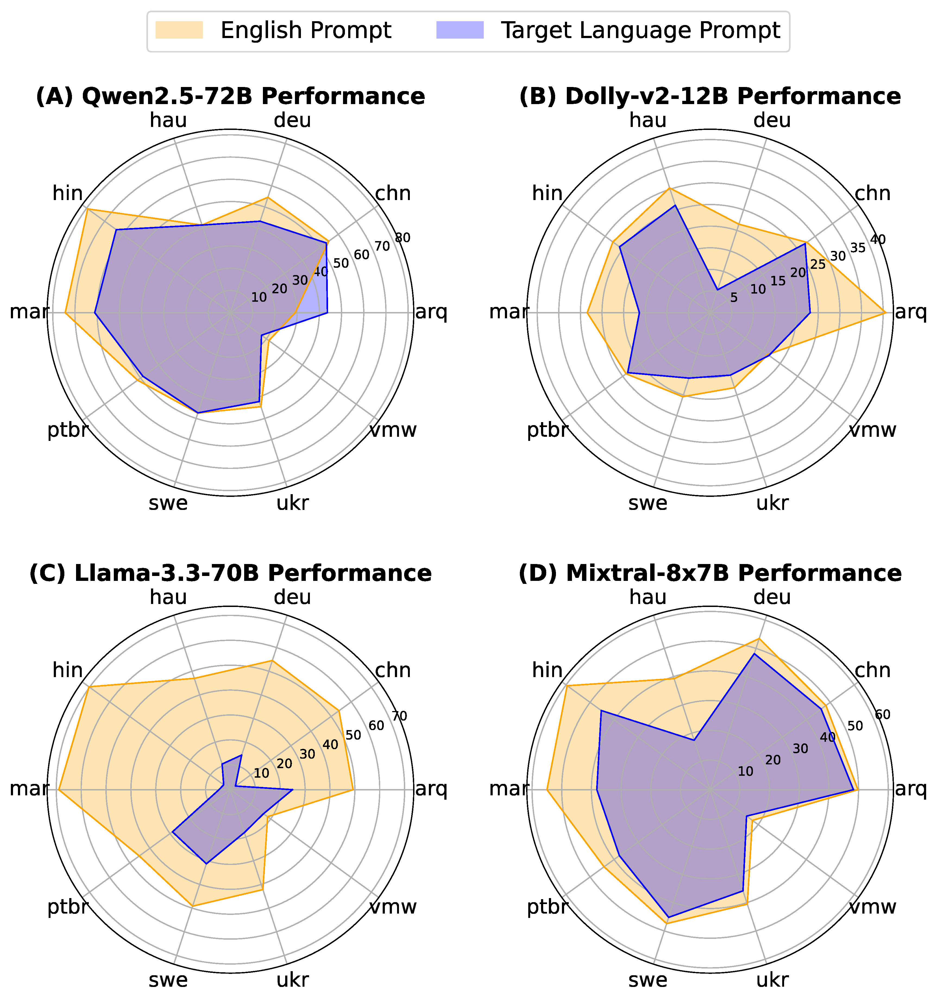
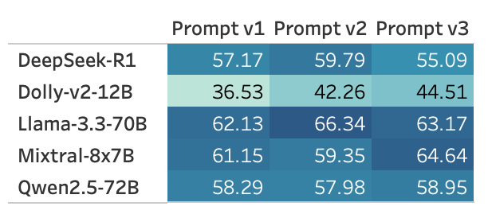

*: Equal contribution. Contact: s.muhammad@imperial.ac.uk, OusidhoumN@cardiff.ac.uk
This project has received two awards
If you use our dataset, please cite our papers using the BibTeX at the end of this page.
We introduce BRIGHTER: a new emotion recognition dataset collection in 28 languages that originate from 7 distinct language families. Many of these languages are considered low-resource, and are mainly spoken in regions characterised by a limited availability of NLP resources (e.g., Africa, Asia, Latin America).
Our contribuitions:
Below are the statistics of our dataset collection:
Comparing models' performance across languages when prompted in English (orange) vs. when prompted in the target language (blue). LLMs perform better when prompted in English.
Performance of different LLMs across three prompt paraphrases on the English test set. Different prompts impact model performance.

LEFT FIG.: Few-shot performance of LLMs on the English test set.Performance improves with more shots
RIGHT FIG.: Top-k performance of different LLMs on the English test set. Higher k values increase the likelihood of retrieving the correct answer
Pearson correlation scores for intensity classification using MLMs and LLMs.
The best performance scores are highlighted in orange.
@article{muhammad2025brighterbridginggaphumanannotated,
title = {BRIGHTER: BRIdging the Gap in Human-Annotated Textual Emotion Recognition Datasets for 28 Languages},
author = {Muhammad, Shamsuddeen Hassan and Ousidhoum, Nedjma and Abdulmumin, Idris and Wahle, Jan Philip and Ruas, Terry and Beloucif, Meriem and de Kock, Christine and Surange, Nirmal and Teodorescu, Daniela and Ahmad, Ibrahim Said and Adelani, David Ifeoluwa and Aji, Alham Fikri and Ali, Felermino D. M. A. and Alimova, Ilseyar and Araujo, Vladimir and Babakov, Nikolay and Baes, Naomi and Bucur, Ana-Maria and Bukula, Andiswa and Cao, Guanqun and Cardenas, Rodrigo Tufino and Chevi, Rendi and Chukwuneke, Chiamaka Ijeoma and Ciobotaru, Alexandra and Dementieva, Daryna and Gadanya, Murja Sani and Geislinger, Robert and Gipp, Bela and Hourrane, Oumaima and Ignat, Oana and Lawan, Falalu Ibrahim and Mabuya, Rooweither and Mahendra, Rahmad and Marivate, Vukosi and Piper, Andrew and Panchenko, Alexander and Porto Ferreira, Charles Henrique and Protasov, Vitaly and Rutunda, Samuel and Shrivastava, Manish and Udrea, Aura Cristina and Wanzare, Lilian Diana Awuor and Wu, Sophie and Wunderlich, Florian Valentin and Zhafran, Hanif Muhammad and Zhang, Tianhui and Zhou, Yi and Mohammad, Saif M.},
journal = {arXiv preprint arXiv:2502.11926},
year = {2025}
}
@inproceedings{muhammad-etal-2025-semeval,
title = "{S}em{E}val-2025 Task 11: Bridging the Gap in Text-Based Emotion Detection",
author = "Muhammad, Shamsuddeen Hassan and Ousidhoum, Nedjma and Abdulmumin, Idris and Yimam, Seid Muhie and Wahle, Jan Philip and Ruas, Terry and Beloucif, Meriem and De Kock, Christine and Belay, Tadesse Destaw and Ahmad, Ibrahim Said and Surange, Nirmal and Teodorescu, Daniela and Adelani, David Ifeoluwa and Aji, Alham Fikri and Ali, Felermino and Araujo, Vladimir and Ayele, Abinew Ali and Ignat, Oana and Panchenko, Alexander and Zhou, Yi and Mohammad, Saif M.",
booktitle = "Proceedings of the 19th International Workshop on Semantic Evaluation (SemEval-2025)",
month = july,
year = "2025",
address = "Vienna, Austria",
publisher = "Association for Computational Linguistics",
url = "",
doi = "",
pages = ""
}